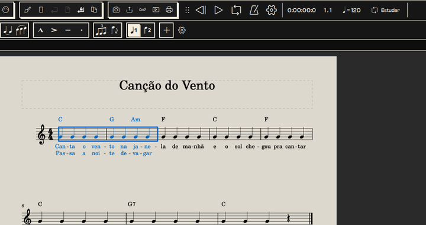
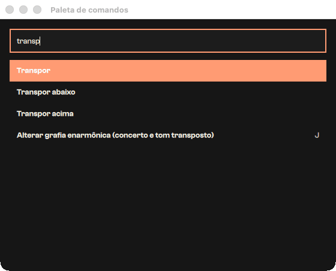
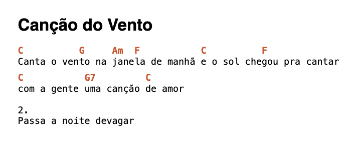

PAUTA
PAUTAPartitura sem complicação.
Escreva música com o teclado, o mouse ou um teclado MIDI. Ouça, crie as partes de cada instrumento e imprima. Abre arquivos MusicXML, MIDI e do MuseScore.

Por que usar
Nada sai do seu Mac
Suas partituras ficam no seu computador. Sem nuvem obrigatória.
Sem conta e sem login
Abriu, escreveu. Sem MuseHub, sem e-mail.
Som que já vem junto
Toca na hora, sem baixar gigas de sons.
Paleta de comandos
Cmd+Shift+P e digite o nome de qualquer função.
Teclado que acende
O piano na tela mostra as notas enquanto a música toca.
Se atualiza sozinho
Avisa quando sai versão nova. Fala português e inglês.
Quase 10 vezes mais rápido que o MuseScore
Em partituras grandes, as edições do dia a dia respondem na hora. Uma nota com sustenido no meio da partitura não faz o programa reorganizar todas as páginas seguintes.
Medido no mesmo Mac (Mac mini M4), numa partitura de 20 instrumentos e 300 compassos, comparando o Pauta 1.0.8 com o motor do MuseScore Studio 4.7.7, no qual o Pauta é baseado. É o tempo que o programa leva para processar cada edição. Outras edições, como apagar, colar e transpor, levam o mesmo tempo nos dois. Em partituras pequenas, os dois já são rápidos.
Pauta × MuseScore
O Pauta nasceu do MuseScore Studio, um ótimo programa de código aberto. Ele mantém tudo o que o MuseScore faz e acrescenta o que faltava para quem quer simplicidade.
| Pauta | MuseScore Studio 4.7 | |
|---|---|---|
| Editar partituras grandes | Quase 10× mais rápido (veja os tempos) | Tempo de referência |
| Atualização no Mac | Baixa, troca e reabre sozinho | Baixa e abre o instalador para você arrastar |
| Exportar vídeo da partitura | Já vem pronto | Precisa instalar o FFmpeg |
| Sons que já vêm junto | 2 bancos (MS Basic e GeneralUser GS) | 1 banco (MS Basic); sons melhores com download à parte |
| Modo estudo: repetir, ir mais devagar e contar antes | Num botão só | Em três controles separados |
| Letra com cifras em PDF ou texto | Sim | Não |
| Paleta de comandos (⌘⇧P) | Sim | Não |
| Preço | Grátis | Grátis |
| Código aberto | Sim (GPL-3.0) | Sim (GPL-3.0) |
Comparação com o MuseScore Studio 4.7.7, a versão em que o Pauta se baseia, conferida no código dele. Os nomes MuseScore e MuseScore Studio pertencem aos seus donos; o Pauta não tem ligação com eles.



O que ele faz
Escrever
- Notas pelo teclado, mouse, piano na tela ou teclado MIDI
- Letra, cifras e diagramas de acordes
- Tablatura e bateria
- Dinâmicas, articulações, repetições
- Colar completo: fórmula, armadura, ritornelos e andamento vêm junto
- Backspace apaga para trás enquanto você escreve
- Mudar a duração pode empurrar as notas seguintes
Ouvir
- Reprodução com mixer
- Reverb liga/desliga com um clique
- Plugins de som VST3
- Loop de trecho e metrônomo
- Escolher quais vozes tocam
- Tocar só na 1ª ou só na 2ª vez
- Dois sons: MS Basic ou GeneralUser GS
Organizar
- Partes de cada instrumento, ligadas à grade
- Transposição
- Desenrolar repetições
- Copiar o layout de uma parte para as outras
- Ritornelo maior, em 3 tamanhos
- Porta e canal MIDI de cada instrumento
Abrir e salvar
- MusicXML, MIDI, MuseScore (.mscz), Guitar Pro
- PDF, PNG, SVG
- Áudio MP3, WAV, FLAC
- Vídeo MP4 da partitura rolando
- Captura de imagem da seleção
- MusicXML que passa na validação oficial
Novidades
Como instalar
- Baixe o Pauta (arquivo
.dmg). - Abra o arquivo e arraste o Pauta para a pasta Aplicativos.
- Abra o Pauta pelos Aplicativos.
- Na primeira vez, o Mac avisa que não consegue verificar o app, porque ele é gratuito e não passou pela loja da Apple. Abra Ajustes do Sistema → Privacidade e Segurança, role até o fim e clique em Abrir Mesmo Assim. Só precisa fazer isso uma vez.
- O Mac também pede acesso à pasta Documentos: é lá que o Pauta guarda suas partituras.
Privacidade
O Pauta não tem conta, não coleta dados e não envia suas partituras para lugar nenhum. Ele só usa a internet uma vez por dia, para ver se saiu uma versão nova.
Apoie o Pauta
O Pauta é e vai continuar grátis. Se ele te ajudou, qualquer valor ajuda muito. Obrigado de coração!
e2a1f4a9-ebfe-4c3c-a531-92a0e7433f14